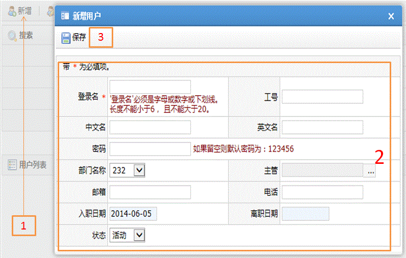

新增用户
字段描述
字段名
描述
登录名
用来登录系统的账号
工号
员工工号
中文名
中文名称
英文名
英文名称
密码
登陆系统时用的密码，不填时默认为123456
部门名称
下拉选择系统存在的部门名臣
主管
该用户的主管，从系统中选择存在的用户
邮箱
用户的公司邮箱
电话
用户的公司电话
入职日期
入职日期
离职日期
离职日期
状态
活动：有效状态；
非活动：无效状态；
离职：离职后的状态
功能描述
新增系统用户
保存
1.主页面中单击新增按钮；
2.输入相关数据，带红色必填；
3.单击保存按钮
